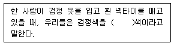
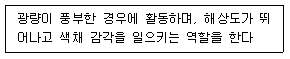
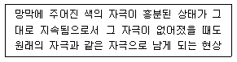
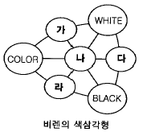

컬러리스트기사 (2004-03-07 기출문제)
1과목: 색채심리 마케팅
1. 다음 중 색채와 음악을 연결한 공감각의 특성을 잘 이용하여 '브로드웨이 부기우기(Broadway Boogie Woogie)'라는 작품을 제작한 작가는?
- 요하네스 이텐(Johaness Itten)
- 몬드리안(Mondrian)
- 카스텔(Castel)
- 모리스 데리베레(Maurice Deribere)
(정답률: 알수없음)

2. 색채 조화론에서 미적인 원리들을 이해하고 이들을 배색에 적용시킬 수 있는 법칙으로 발전시키는 일은 매우 중요하다. 그렇다면 미국의 색채학자 져드(D.B.Judd)가 정립시킨 색채조화의 4가지 원칙에 해당하지 않는 것은?
- 질서의 원칙
- 친근성의 원칙
- 개체성의 원칙
- 명료성의 원칙
(정답률: 알수없음)
3. 칼라의 조사자료 분석에 대한 설명 중 잘못된 것은?
- 자료분석의 목적은 자료를 간명하게 요약하는 것이다.
- 통계분석 결과가 모호한 경우 확률적으로 해석하고 결론을 내리는 것이다.
- 자료를 간명하게 요약하는데는 빈도분포, 퍼센트, 평균치 등의 기술통계가 유용하다.
- 자료분석의 첫단계는 소비자의 성향이나 문항들간의 관계를 기술하는 상관계수나 요인분석, 군집분석, 판별분석 등 고급통계가 필요하다.
(정답률: 알수없음)
4. 소비자 행동에 영향을 미치는 내적, 심리적 요인이 아닌 것은?
- 지각
- 학습
- 품질
- 동기
(정답률: 알수없음)
5. 다음은 색채의 공감각 중 촉감에 관한 설명이다. 이 중잘못된 것은?
- 밝은 핑크는 부드러운 촉감을 준다
- 한색 계열은 난색 계열에 비하여 촉촉한 느낌을 준다
- 밝고 채도가 높은 색채는 강하고 딱딱한 느낌을 준다
- 난색 계열은 한색 계열에 비하여 건조한 느낌을 준다
(정답률: 알수없음)
6. 색의 분광효과로 발견된 일곱가지 색을 칠 음계에 연계시켜 색채와 소리의 조화론을 처음으로 시사한 사람은?
- 뉴턴
- 요하네스 이텐
- 카스텔
- 먼셀
(정답률: 알수없음)
7. 제품의 색채선호에 대한 설명 중 틀린 것은?
- 자동차는 지역 환경, 빛의 강약, 자연환경, 생활패턴 등에 따라 선호 경향이 다르게 나타난다.
- 제품의 선호색은 시대에 따라 변함없이 같다.
- 동일한 제품도 성별에 따라 선호색이 다르다.
- 선호색채는 사용자의 라이프 스타일을 반영한다.
(정답률: 알수없음)
8. 광고가 제작된 후 메세지를 전달할 매체 선정시 매체선정의 요인이 아닌 것은?
- 도달률, 빈도, 영향도의 결정
- 주된 매체유형의 선택
- 다수 매체 수단을 선택
- 매체시간의 선택
(정답률: 알수없음)
9. 표적고객에게 광고를 통해 내세우고자 하는 제품의 특징을 지칭하는 단어는 무엇인가?
- 소구점
- 카피
- 일러스트레이션
- 배열
(정답률: 알수없음)
10. 물체색을 지각하기 위한 3가지 기본 조건이 아닌 것은?
- 물체
- 광원
- 눈
- 프리즘
(정답률: 알수없음)
11. 색채 마케팅에서 이해하여야 하는 마케팅의 기초 이론 중 4P Mix에 포함되지 않는 것은?
- Product
- Place
- Promotion
- Pride
(정답률: 알수없음)
12. 회사의 색채마케팅전략 중 회사에 대한 이미지를 구체적으로 기억하게 해주는 대표적인 수단은?
- 기업의 CI
- 기업의 외관 색채
- 기업의 인테리어 컬러
- 기업의 광고 색채
(정답률: 알수없음)
13. 병원 수술실의 색채계획으로 옳은 것은?
- 수술실 벽면은 일반적으로 크림색이 적절하다.
- 따뜻한 색채가 적절하다.
- 녹색이 적절하다.
- 흰색이 적절하다.
(정답률: 알수없음)
14. 1950년대부터 가정 파티라는 마케팅 전략으로 커다란 성공을 거두었던 주방식기 전문업체인 터퍼웨어는 여성의 사회진출로 가정에서의 파티보다는 회사내의 파티 또는 가족간의 쇼핑을 많이 하는 시장으로 진출하여 기존의 색채와는 달리 눈에 띄는 강한 색채를 적용하는 마케팅 전략을 구축하였다. 이것은 색채 마케팅 전략의 영향요인 중 어떤 것을 가장 고려한 것인가?
- 인구 통계적 변화
- 기술적 환경의 변화
- 경제적 환경의 변화
- 자연적 환경의 변화
(정답률: 알수없음)
15. 다음 SD법에 관한 설명 중 잘못된 것은?
- 이미지의 심층 면접법과 언어 연상법이다.
- 이미지의 수량적 척도화의 방법이다.
- 형용사 반대어 쌍으로 척도를 만들어 피험자에게 평가하게 한다.
- 복잡하고 파악하기 어려운 현상을 다차원적으로 표시 할 수 있어 색채는 물론 여러 이미지 조사방법으로 널리 쓰이고 있다.
(정답률: 알수없음)
16. 다음 제품의 포지셔닝과 관련된 내용 중 잘못된 것은?
- 제품 차별화 전략이다.
- 라이프 스타일에 따른 소비자 시장의 연구이다.
- 메르체데스(Mercedes)는 최고급 자동차로 인지된다.
- 소니는 뛰어난 디자인과 품질의 가전제품으로 인지 된다.
(정답률: 알수없음)
17. 국제언어로서의 색에 대한 연상이 잘못된 것은?
- 노랑 - 장애물 또는 위험물의 경고
- 빨강 - 소방기구
- 녹색 - 구급장비, 상비약
- 파랑 - 수위 조절 및 안전지역
(정답률: 알수없음)
18. 색채 조사를 위한 표본 추출 방법으로 적합하지 않은 것은?
- 편차가 가능한 많이 나는 방식으로
- 무작위로 표본추출
- 대규모 집단에서 소규모 집단으로
- 모집단에 대한 정확한 이해 후에
(정답률: 알수없음)
19. 매슬로우(Maslow)는 인간의 1차적 욕구를 다섯계층으로 구분된다고 설명하였다. 이 욕구 단계에 해당하지 않는 것은?
- 생리적 욕구
- 사회적 욕구
- 자아실현 욕구
- 필요의 욕구
(정답률: 알수없음)
20. 색채조사를 위한 설문지 작성으로 부적당한 것은?
- 개방형은 응답자가 자신의 생각을 자유롭게 응답하는 것이다.
- 폐쇄형은 두 개 이상의 응답 가운데 하나를 선택하도록 하는 것이다.
- 정확한 응답을 얻기 위해 전문용어를 활용하는 것이 좋다.
- 응답의 양과 질을 고려하여 질문의 길이를 결정하여 야 한다.
(정답률: 알수없음)
2과목: 색채디자인
21. 재료 선택시 색채에 영향을 주는 가장 큰 요소는?
- 촉감
- 시각
- 빛
- 패턴
(정답률: 알수없음)
22. 색채관리의 순서가 올바른 것은?
- 색의 설정 - 발색 및 착색 - 판매 - 검사
- 검사 - 색의 설정 - 발색 및 착색 - 판매
- 색의 설정 - 발색 및 착색 - 검사 - 판매
- 색의 설정 - 검사 - 발색 및 착색 - 판매
(정답률: 알수없음)
23. 검정색과 노랑색을 사용하는 교통 표시판은 색채의 어떠한 특성을 이용한 것인가?
- 색채의 연상
- 색채의 명시도
- 색채의 심리
- 색채의 이미지
(정답률: 알수없음)
24. 일반적으로 지적인 계획과 노력에 의해 목표하는 것을 달성하기 위해 자연과 사회의 변천작용을 계획적으로 실용화하는 것을 지칭하는 용어는?
- 효용성(utility)
- 텔레시스(telesis)
- 트랜드(trend)
- 플래스틱(plastic)
(정답률: 알수없음)
25. 다음 중 옥외광고에 속하지 않는 것은?
- 패키지(package)
- 네온사인(neon sign)
- 애드벌룬(adballoon)
- 광고자동차(advertising car)
(정답률: 알수없음)
26. 기업이나 기관, 행사 등 대상의 이미지를 일관성 있게 관리하기 위한 것은?
- 타이포그래피 디자인
- 아이덴티티 디자인
- 에디토리얼 디자인
- 인터페이스 디자인
(정답률: 알수없음)
27. 타이포그래피(typography)를 가장 잘 설명한 것은?
- 그림형태로 이루어진 글자의 조형적 표현
- 광고에 나오는 그림의 조형적 표현
- 글자에 의한 모든 커뮤니케이션의 조형적 표현
- 상징에 의한 커뮤니케이션의 조형적 표현
(정답률: 알수없음)
28. 시지각의 원리에 근거를 둔 추상적, 기계적 형태의 반복과 연속 등을 통한 시각적 환영, 지각 그리고 색채의 물리적 및 심리적 효과에 관련된 착시의 회화는?
- 팝아트
- 옵아트
- 미니멀리즘
- 포스트모더니즘
(정답률: 알수없음)
29. 이 디자인의 가장 큰 특징은 매체가 쌍방향(two-waycommunication) 적이라는 것이다. 즉, 정보수신자인 사용자의 의견을 전달함으로써 쌍방의 간격을 좁히고 있다. 이 디자인이란?
- 일러스트레이션
- 컴퓨터 그래픽
- 광고디자인
- 멀티미디어 디자인
(정답률: 알수없음)
30. 디자인의 심미성에 대해 가장 적절하게 기술한 것은?
- 디자이너의 주관적 판단에 의해 결정되어야 한다.
- 기능적인 디자인에는 심미성이 결여될 수 밖에 없다.
- 소비대중이 공감할 필요는 없다.
- 사회, 문화적으로 평가가 달라질 수 있다.
(정답률: 알수없음)
31. 개인과 색채와의 관계에서 그 용어가 잘못 연결된 것은?
- 개인이 소비하는 색과 디자인의 선택을 퍼플러 유즈(popular use)라고 한다.
- 개인의 기호에 따른 색이나 디자인 선택을 컨슈머 유즈(consumer use)라고 한다.
- 개인의 일시적 호감에 따라 변하는 색채를 템포러리 플레져 칼라(temporary pleasure colors)라고 한다.
- 유행색은 개인의 취향에 따른 일시적인 현상으로 3개월에서 1년 단위로 보여진다.
(정답률: 알수없음)
32. 의상디자인의 발달과정에서 시대별로 나타난 색채사용의 특성 중 타당치 않은 것은?
- 1900년대에는 아르누보의 부드럽고 여성적인 경향을 보이는 파스텔 색조가 유행하였다.
- 1940년대 초반에는 2차세계대전의 영향으로 검정, 카키, 올리브의 군복의 색조가 즐겨 사용되었다.
- 1960년대는 팝아트의 영향으로 블루 진과 자연의 색조인 파랑, 녹색이 유행하였다.
- 1980년대에는 재패니스 룩(Japanese Look), 앤드로지너스 룩(Androgynous look)으로 검정, 흰색과 어두운 자연계 색이 유행하였다.
(정답률: 알수없음)
33. 그리스인들이 그들의 신전과 예술품에서 아름다움과 시각적 질서를 얻기 위한 수단으로 사용한 비례법으로 조직적 구조를 말하는 체계는?
- 조화
- 황금분할
- 산술적 비례
- 기하학적 비례
(정답률: 알수없음)
34. 디자인이 수공예 중심의 귀족 전유물에서 대중화, 대량생 산화로 전환된 시기는?
- 산업혁명 이후
- 아르데코 이후
- 아르누보 이후
- 독일공작연맹 이후
(정답률: 알수없음)
35. 다음 내용 중 ( )안에 들어갈 적당한 용어는?

- 대조
- 통일
- 주조
- 조화
(정답률: 알수없음)
36. 환경파괴를 최소화하는 것을 '에코 디자인'이라 정의 할 때 그 디자인 원칙과 거리가 가장 먼 것은?
- 자연의 섭리에 따르는 디자인
- 지속 가능한 디자인의 선택
- 자연을 제일 우선으로 살리는 디자인
- 생태적 측면이 중요하며 문화적 측면은 고려대상이 아님
(정답률: 알수없음)
37. 제품수명주기의 단계를 시간 순으로 적절하게 나열한 것 은?
- 도입기 - 성숙기 - 확산기 - 쇠퇴기
- 도입기 - 성장기 - 성숙기 - 쇠퇴기
- 수용기 - 도입기 - 성숙기 - 쇠퇴기
- 수용기 - 성숙기 - 확산기 - 쇠퇴기
(정답률: 알수없음)
38. 다음의 디자인 사조들이 대표적으로 사용하였던 색채의 경향이 잘못 설명된 것은 어느 것인가?
- 팝아트는 복제성과 보편성을 강조하기 위하여 전체적으로 어두운 색조에 혼란한 강조색을 사용한다.
- 옵아트는 색의 원근감, 진출감을 흑과 백 또는 단일 색조를 강조하여 사용한다.
- 아르누보는 큐비즘의 영향을 받아, 차분하고 자연적인 색채를 사용하며, 공간적이고 입체적인 색채의 효과를 강조한다.
- 다다의 색은 화려한 면과 어두운 면을 동시에 갖고 있으면서, 극단적인 원색대비를 사용하기도 한다.
(정답률: 알수없음)
39. 부드럽고, 수줍고, 달콤하고, 섬세하며 여성적인 이미지로, 파티나 약혼식, 결혼식 후의 신부예복 등에 가장 많이 쓰이는 색은?
- 핑크
- 브라운
- 보라
- 오렌지
(정답률: 알수없음)
40. 설계도 보완을 위해 작업순서 방법, 마감정도, 제품규격, 품질 등을 명시하는 것은?
- 견적서
- 평면도
- 시방서
- 설명도
(정답률: 알수없음)
3과목: 색채관리
41. 다음 중 CCM(Computer Color Matching)의 장점이 아닌 것은?
- 정확한 아이소머리즘을 실현할 수 있다.
- 위지위그(WYSIWYG)를 구현할 수 있으며 측정장비가 간단하다.
- 육안조색보다 감정이나 환경의 지배를 받지 않는다.
- 롯트별 색채의 일관성을 갖는다.
(정답률: 알수없음)
42. 다음 중 천연염료로만 구성된 것은?
- 동물염료, 광물염료, 식물염료
- 광물염료, 합성염료, 식용염료
- 식물염료, 형광염료, 식용염료
- 홍화염료, 치자염료, 반응성염료
(정답률: 알수없음)
43. 분광광도계의 특징으로서 틀린 것은?
- 자외선을 측정할 수 있는 분광광도계는 UV램프가 있다.
- 가시광선을 측정할 수 있는 텅스텐 할로겐램프가 있다.
- 더블 빔(double beam) 방식이 데이터가 안정되고 정확하다.
- 실리콘 포토다이오드는 자외선에서 가시광선까지 측정할 수 있다.
(정답률: 알수없음)
44. 색채 영역과 혼색방법에 관한 설명이다. 틀린 것은?
- 모니터 화면의 형광체들은 가법혼색의 주색의 특징에 따라 선별된 형광체를 사용한다.
- 감법혼색은 각 주색의 파장영역이 좁을수록 색역이 확장된다.
- 컬러프린터의 발색은 병치혼색와 감법혼색을 같이 활용한 것이다.
- 감법혼색에서 시안(Cyan)은 600nm 이후의 빨강색 영역의 반사율을 효과적으로 감소시킨다.
(정답률: 알수없음)
45. 컬러프린터의 색재현을 가장 잘 설명한 것은?
- 잉크의 혼합에 의한 감법혼색으로 완벽하게 설명할 수 있다.
- 원색은 시안, 마젠타, 청록이며 검은 색은 경제적인 이유로 사용된다.
- 색역(gamut)은 일반적으로 모니터의 색역에 비하여 넓다.
- 감법혼색과 병치혼색이 혼재하는 다소 복잡한 혼색을 한다.
(정답률: 알수없음)
46. 다음 설명 중 틀린 것은?
- 인공광이 자연광의 분광분포와 일치하는 정도를 연색성 지수라고 한다.
- 모든 광원은 연색성의 지수가 높을수록 색을 많이 보여주는 광원이다.
- 프로젝터의 경우 백열 광원을 슬라이드 투사판의 경우 형광 광원을 이용한다.
- 광원에 따라 같았던 색도 다르게 보이는 것은 두색의 분광 반사도의 차이에서 비롯된다.
(정답률: 알수없음)
47. 다음 중 합성안료 합성시 적절한 크기의 안료입자를 합성하는데 필요한 조건이 아닌 것은?
- 반응조건
- 건조조건
- 희석제의 종류
- 염료의 종류
(정답률: 알수없음)
48. 광원색과 관련된 광원의 특성에 대한 설명 중 맞는 것은?
- 순도란 광원색의 색상과 관련되는 값이다.
- 광원색은 색의 삼속성 중 색상과 채도로만 표현한다.
- 주파장선은 광원색의 채도와 상관되는 값이다.
- 녹색계열의 광원들은 색온도를 구할 수가 없다.
(정답률: 알수없음)
49. 디지털 색채 시스템에 대한 설명으로 맞는 것은?
- RGB시스템은 빛을 더할수록 밝아지는 감법혼색 체계이다.
- HSB시스템은 오스트발트 색표계를 중심으로 선택하도록 되어있다.
- CMYK모드는 각각의 수치를 더해서 밝아지는 가법혼색의 체계이다.
- LAB시스템의 L＊은 밝기를 a＊,b＊는 색상과 채도를 함께 나타낸다.
(정답률: 알수없음)
50. 한국산업규격(KS)에서 채용하고 있는 색채표시체계가 아닌 것은?
- CIE XYZ
- Munsell system
- NCS, PCCS
- CIE LAB
(정답률: 알수없음)
51. 조건등색과 무조건등색의 차이를 가장 잘 설명한 것은?
- 조건등색은 분광반사율이 정확하게 일치하는 등색이다.
- 무조건 등색은 광원의 변화에는 무관하나 관측자가 바뀌면 등색이 깨질 수 있다.
- 조건 등색은 무조건등색의 부분집합이다.
- 무조건등색을 확인하기 위해서는 분광반사율을 측정할 필요가 있다.
(정답률: 알수없음)
52. 다음 중 CCM(Computer Color Matching)에 대한 설명으로 틀린 것은?
- CCM의 특징은 분광반사율을 기준색에 맞추어 일치 시킨다.
- 분광 반사율을 이용한 것으로 광원에 따라 색채가 일치하기도 하고 달라지기도 한다.
- 사용되는 재료의 양을 정확하게 지정하여 발색에 소요되는 비용을 정확히 산출할 수 있다.
- 수십년의 경험과 기술을 필요로 하지 않으며 정보의 공유가 가능하다.
(정답률: 알수없음)
53. 색을 측정하는 목적이 아닌 것은?
- 정확한 색 파악을 위해
- 주관적인 색의 표현을 위해
- 정확한 색의 전달을 위해
- 정확한 색의 재현을 위해
(정답률: 알수없음)
54. 북위 40도 지점에서 흐린 날 오후 2시경 북쪽 창문을 통하여 들어오는 빛은 다음의 CIE 표준광 중 어떤 것에 가장 가까운가?
- CIE C 표준광
- CIE A 표준광
- D65 표준광
- D50 표준광
(정답률: 알수없음)
55. 조색사가 색료 선택시 고려해야 할 조건 중 가장 거리가 먼 것은?
- 채색될 물질의 종류
- 착색비용
- 착색의 견뢰성
- 색역 및 용제의 종류
(정답률: 알수없음)
56. 색채 표시계(색표계)에 대한 다음 설명 중 맞는 것은?
- 측정은 2회 이상 실시하면 된다.
- L*a*b*에서 기호 a*는 Yellow~Blue의 관계를 표시한다
- L*C*h에서 h는 색상, 즉 hue를 의미한다.
- XYZ와 관계되는 색채는 빨강, 노랑, 파랑, 검정, 보라이다.
(정답률: 알수없음)
57. 다음 중 유기안료에 대한 설명으로 맞는 것은?
- 백색 안료가 많이 쓰이며, 착색용 외에 다른 안료에 섞어서 톤을 엷게 하거나 은폐력을 크게하는 데에 사용된다.
- 물에 녹지 않는 금속화합물의 형태인 레이크 안료와 물에 녹지 않는 염료를 그대로 사용한 색소 안료로 나뉜다.
- 도료, 인쇄잉크, 회화용 크레용, 고무, 통신기계, 건축 재료, 요업제품, 합성수지 등에 사용된다.
- 특수한 안료로는 형광등, 브라운관, 야광도료 등에 사용되는 아연, 스트론튬, 바륨 등의 황화물인 형광안료가 있으며 내광성이나 내열성이 좋지않다.
(정답률: 알수없음)
58. 먼셀의 색채개념인 색상, 명도, 채도를 중심으로 선택하도록 되어있는 디지털 색채 시스템은?
- CMYK시스템
- HSB시스템
- RGB시스템
- LAB시스템
(정답률: 알수없음)
59. 육안조색시 필요한 준비물이다. 맞는 것은?
- 측색기, 어플리케이터, CCM, 측정지
- 표준광원, 어플리케이터, 스포이드, 측색기
- 표준광원, 소프트웨어, 믹서, 스포이드,
- 은폐율지, 측색기, 믹서, CCM
(정답률: 알수없음)
60. 측색시 유의 사항으로 틀린 것은?
- 측색기를 대상의 물체에 최대한 밀착하도록 한다.
- 측색기를 대상과 45도 또는 75도 정도의 각도로 유지한다.
- 반드시 고유번호와 일치하는 교정판을 사용해야 한다
- 자연물을 측색하는 경우 3회 이상 측색하는 것이 바람직하다.
(정답률: 알수없음)
4과목: 색채지각론
61. 다음 두 색이 보색 관계에 있지 않은 것은? (먼셀 10색상환을 기준으로 함)
- 5R - 5BG
- 5YR - 5B
- 5Y - 5PB
- 5GY - 5RP
(정답률: 알수없음)
62. 벽에 붙은 청록색 전단지를 한참 읽다가 문득 시선을 하얀 벽면으로 돌렸을 때, 어떤 색 잔상이 보이는가?
- 파랑
- 빨강
- 검정
- 노랑
(정답률: 알수없음)
63. 다음은 물체의 색과 표면의 반사율에 관한 관계를 설명한것이다. 틀린 내용은? (단, 파장의 범위는 가시광선 파장의 범위이다)
- 하얀 수정액은 반사율 85% 정도로 파장 전범위에 걸쳐 고루 반사한다.
- 파란 넥타이는 중파장 범위에서 강하게 반사한다.
- 검은 양말은 반사율 5% 정도로 파장 전범위에 걸쳐 고루 반사한다.
- 빨간 모자는 장파장 범위에서 강하게 반사한다.
(정답률: 알수없음)
64. 동시대비에 대한 설명 중 틀린 것은?
- 색차가 클수록 대비현상은 강해진다.
- 자극과 자극 사이의 거리가 가까와질수록 대비현상은 약해진다.
- 자극을 부여하는 크기가 작을수록 대비의 효과가 커진다.
- 시점을 한 곳에 집중시키려는 색채지각과정에서 일어난다.
(정답률: 알수없음)
65. 혼색에 대한 설명 중 틀린 것은?
- 빛의 혼합은 가법혼색이다.
- 컬러인쇄에서는 병치혼색을 사용한다.
- 회전혼색은 가법혼색의 일종이다.
- 점묘화는 감법혼색의 응용이다.
(정답률: 알수없음)
66. 색료혼합에서 명도와 채도 변화는 어떤 원리에 근거하는가?
- 가법혼색
- 감법혼색
- 병치혼색
- 동화혼색
(정답률: 알수없음)
67. 다음 내용과 같은 기능을 수행하는 눈의 기관은 무엇인가?

- 홍채
- 간상체
- 추상체
- 시냅스
(정답률: 알수없음)
68. 정육점에 붉은 색 조명을 하여 고기가 싱싱하게 보이게 하였다. 무엇을 고려한 것인가?
- 분광반사
- 연색성
- 조건등색
- 스펙트럼
(정답률: 알수없음)
69. 녹색 계통의 바탕색 그림 속에 색상의 차이에 근거한 강조 색을 사용하여 돋보이게 하고 싶다면 어떤 색이 가장 좋은가?
- 흰색
- 빨간색
- 파란색
- 주황색
(정답률: 알수없음)
70. 파란색 옷 위에 달려있는 남색 리본이 보라색 옷 위에 달려있는 남색 리본보다 붉게 보이는 현상은?
- 색상대비
- 명도대비
- 채도대비
- 연변대비
(정답률: 알수없음)
71. 색온도에 대한 설명 중 틀린 것은?
- 색온도가 6500k 이상인 주광색 형광등이나 하늘과 같은 경우 시원한 느낌의 푸른 빛이 도는 흰색을 띈다.
- 색온도는 광원의 실제 온도를 의미한다.
- 색온도가 3000k 이하인 백열등이나 석양질 무렵의 하늘과 같은 경우 따뜻한 느낌의 빛을 띈다.
- 비교적 높은 색온도는 푸른색 계열의 시원한 색에 대응된다.
(정답률: 알수없음)
72. 색의 진출 후퇴에 대한 설명 중 틀린 것은?
- 배경색과 색상 차가 큰 색은 진출한다.
- 배경색의 채도가 낮은 것에 대하여 높은 색은 진출 한다.
- 배경색과 명도 차가 큰 밝은 색은 진출한다.
- 난색계는 한색계보다 진출성이 있다.
(정답률: 알수없음)
73. 잔상(after image)에 대한 설명으로 잘못된 것은?
- 자극이 없어진 후에도 남아있는 효과로 색상, 채도, 명도, 형태, 패턴, 질감초점, 시간이 각각 다른 아주 복잡한 지각이다.
- 처음 본 것과 나중에 나타나는 것과의 명도 비교에서 밝기가 반대로 나타나는 현상을 음성잔상이라 한다.
- 보색잔상은 나타나는 잔상의 색상이 먼저 본 자극원의 반대색이다.
- 어떤 색을 보고 연속하여 다른 색을 보았을 때 그 색이 달라보이는 현상으로 나타나는 양상에 따라 음성 잔상과 양성잔상으로 구분된다.
(정답률: 알수없음)
74. 다음 내용은 무엇을 설명한 것인가?

- 동시대비 효과
- 양성 잔상
- 음성 잔상
- 연계대비 효과
(정답률: 알수없음)
75. 다음 가운데 감법혼합의 결과에 맞지 않은 것은?
- 마젠타(Magenta)와 노랑의 감법혼합 결과는 시안(Cyan)이다.
- 노랑과 시안(Cyan)의 감법혼합 결과는 녹색이다.
- 시안(Cyan)과 마젠타(Magenta)의 감법혼합 결과는 파랑이다.
- 마젠타(Magenta)와 노랑과 시안(Cyan)의 감법혼합은 검정이다.
(정답률: 알수없음)
76. 헤링의 4원색 설 색각이론 중에서 망막에 광화학 물질의 존재를 가정하였다. 그것이 아닌 것은?
- 황청 물질
- 적녹 물질
- 청녹 물질
- 백흑 물질
(정답률: 알수없음)
77. 컬러인쇄, 사진 등에 사용되고 있는 색료의 3원색이 아닌 것은?
- 마젠타(magenta)
- 노랑(yellow)
- 녹색(green)
- 시안(cyan)
(정답률: 알수없음)
78. 명소시와 암소시의 중간 정도의 밝기에서 추상체와 간상체 모두 활동하고 있는 시각상태는?
- 잔상시
- 유도시
- 중간시
- 박명시
(정답률: 알수없음)
79. 공장에서 작업자들의 피로감을 덜어주는데 가장 효과적인 내부색은?
- 중명도의 고채도 색
- 저명도의 고채도 색
- 고명도의 저채도 색
- 저명도의 저채도 색
(정답률: 알수없음)
80. 부드러운 느낌을 주기 때문에 도시나 주거건축의 배경이 되는 색으로 활용되는 것은?
- 명도, 채도가 높은 색
- 명도가 높고, 채도가 낮은 색
- 명도가 낮고 채도가 높은 색
- 명도, 채도가 낮은 색
(정답률: 알수없음)
5과목: 색채체계론
81. 다음 중 관용색명이 아닌 것은?
- 에메랄드 그린, 크롬 옐로, 프러시안 블루
- 레디쉬 블루, 다크 블루, 비비드 블루
- 올리브 그린, 베이비 핑크, 스노우 화이트
- 흑, 백, 적, 황, 녹
(정답률: 알수없음)
82. 먼셀의 색채조화원리에 의거하였을 때, 조화되지 않는 보색관계는?
- 중간채도(/5)의 반대색끼리는 같은 면적으로 배색하면 조화롭다.
- 중간명도(5/)의 채도가 다른 반대색끼리는 고채도는 좁게, 저채도는 넓게 배색하면 조화롭다
- 채도가 같고 명도가 다른 반대색끼리는 명도의 단계를 일정하게 조절하면 조화롭다.
- 명도, 채도가 모두 다른 반대색끼리는 저명도, 고채도는 넓게, 고명도, 저채도는 좁게 구성한 배색은 조화롭다.
(정답률: 알수없음)
83. CIE 표색계의 특성이 아닌 것은?
- 표준광원이 매우 중요한 비중을 가진다.
- 3자극치를 투사하는 것이다.
- RGB를 기본으로 출발하였다.
- XYZ와 반대의 개념이다.
(정답률: 알수없음)
84. CIE(국제조명위원회)에서 정의한 색공간이 아닌 것은?
- NCS
- LAB
- LUV
- LCH
(정답률: 알수없음)
85. '색의 삼속성에 의한 방법' 이란 제목으로 한국산업규격(KS)에서 채택하고 있는 표준표색계는?
- NCS 표색계
- 오스트발트 표색계
- 먼셀 표색계
- DIN 표색계
(정답률: 알수없음)
86. 오간색의 색이름에 해당하지 않는 것은?
- 벽색
- 갈색
- 자색
- 유황색
(정답률: 알수없음)
87. 국제조명위원회에서 개발된 표색계에 대한 설명이 아닌 것은?
- 1931년 감법혼색에 의해 CIE표색계를 만들었다.
- 물체색 뿐 아니라 빛의 색까지 표기할 수 있다.
- 광원과 관찰자에 대한 정보를 표준화하고, 색을 수치 화하였다.
- 물체색이 광원에 따라 달라지는 것을 보완한 것이다.
(정답률: 알수없음)
88. 비렌의 색삼각형에서 TONE에 해당하는 것은?

- ㉮
- ㉯
- ㉰
- ㉱
(정답률: 알수없음)
89. PCCS 표색계의 색상환에 대한 설명 중 틀리는 것은?
- 적, 황, 녹, 청의 4색상을 중심으로 한다.
- 4색상의 심리보색을 색상환의 대립위치에 놓는다.
- 색상을 등간격으로 보정하여 36색상환으로 만든다.
- 색광과 색료의 3원색을 모두 포함한다.
(정답률: 알수없음)
90. 오스트발트 표색계의 등가색환에 대한 설명 중 맞는 것은?
- 색상환은 20색을 기본으로 한다.
- 색상은 번호로 1, 2, 3... 등으로 표시한다.
- 표색은 '색상기호+흑색량+백색량'으로 표시한다.
- 링스타라고 부르며 유채색 축을 중심으로 한다.
(정답률: 알수없음)
91. 저드(D. Judd)의 색채조화원리가 아닌 것은?
- 질서있는 계획에 의해 선택된 배색은 조화롭다.
- 모호성이 없고, 분명함을 지닌 배색은 조화롭다.
- 사람의 눈에 친숙한 배색은 조화롭다.
- 배색된 색채사이에 공통성이 없을 때 조화롭다.
(정답률: 알수없음)
92. 18C 이후 본격화된 색의 체계화작업을 바탕으로 오늘날 제시되는 색입체의 공통적인 구성원리에 속하는 것은?
- 주관적인 감각을 근거로 색을 배열한다.
- 중앙에 수직 축을 설정하고 무채색의 명도단계로 한다.
- 물리학적인 빛의 삼원색 이론에 근거하여 기본색을 모든 색으로 구성한다.
- 색채 지각능력을 바탕으로 기본 색의 수를 최대한 많게 구성해서 색역을 넓힌다.
(정답률: 알수없음)
93. ISCC-NBS 색명법의 설명 중 틀린 것은?
- 색상명은 Pink, Red, Orange, Brown 등을 사용한다.
- 전미색채협회와 미국국가표준국이 공동으로 연구 발표한 것이다.
- 미국에서 통용되는 관용색명을 정리한 것이다.
- 색채의 명도는 moderate를 중심으로 명도가 높은 것은 light, very light, 명도가 낮은 것은 dark, very dark로 한다.
(정답률: 알수없음)
94. NCS표기에서 S2040-Y80R을 뜻하는 표기의 의미는?
- 20% 검정색도와 40% 유채색도를 가진 색이고 80%의 빨간 색도를 지닌 노랑을 뜻한다.
- 20% 하얀색도와 40% 검은색도를 가진 색으로 80%의 노란 색도를 지닌 빨강을 뜻한다.
- 40% 검정색도와 20% 하얀색도와 80% 유채색도를 뜻한다.
- 40% 하얀색도와 20% 검정색도와 80%의 노랑색도를 지닌 유채색도를 뜻한다.
(정답률: 알수없음)
95. 오스트발트 표색계에 따라 기호화한 유채색들이다. 이 색들의 공통된 속성은? (6ig, 6lg, 6ng, 6pg)
- 등흑계열
- 등백계열
- 등순계열
- 등가색환계열
(정답률: 알수없음)
96. 색을 언어로 표시하는 방법인 색명법 중에서 일반색명에 대한 설명은?
- 관용색명이라고도하며 관습적으로 사용해온 하양, 검정, 빨강 등의 고유색명이 여기에 속한다.
- 일반적인 자연현상에서 유래한 하늘색, 물색, 황토색 등이 여기에 속한다.
- 색의 체계에 따라 정확한 전달을 목표로 함으로써 색의 감정적인 느낌의 전달이 어렵다.
- 색채를 색상, 명도, 채도에 따라 수식어를 정하여 '보라기미의 빨강' 등으로 표시하는 색명이다.
(정답률: 알수없음)
97. 색표와 같은 특정의 착색물체를 정하고, 적당한 번호나 기호를 붙여 물체의 색채를 표시하는 표색계는?
- 혼색계
- 현색계
- 감각계
- 지각계
(정답률: 알수없음)
98. 오스트발트 표색계의 설명으로 맞는 것은?
- 오스트발트는 스웨덴의 화학자이며 안료의 개발로 1909년 노벨상을 수상하였다.
- 물체 투과색의 표본을 체계화한 현색계의 칼라 시스템으로 1917년에 창안하여 발표한 20세기 전반의 대표적 시스템이다.
- 이 색체계는 회전 혼색기의 색채 분할면적의 비율을 변화시켜 색을 만들고 색표로 나타낸 것이다.
- 이상적인 백색(W)과 이상적인 흑색(B), 특정 파장의 빛만을 완전히 반사하는 이상적인 중간색을 회색(N)이라 가정하고 체계화하였다.
(정답률: 알수없음)
99. 오스트발트의 색채조화론의 기본 원리가 아닌 것은?
- 등백계열의 조화
- 등순계열의 조화
- 등가색환에서의 조화
- 유채색의 조화
(정답률: 알수없음)
100. 먼셀 기호의 표기로 5Y 8/10의 뜻으로 맞는 것은?
- 명도가 10 이다.
- 명도가 8 이다.
- 채도가 5 이다.
- 채도가 8 이다.
(정답률: 알수없음)